Regi Heksa Ananda
Kelas ini dibuat sebagai StatelessWidget, yang sifatnya immutable. Oleh karena itu, variabel title, amount, category, date dideklarasikan menggunakan final. Penggunaan required pada constructor merupakan validasi arsitektural untuk memaksa halaman sebelumnya mengirimkan data tersebut. Halaman ini tidak akan bisa dibuka jika ada data yang terlewat.
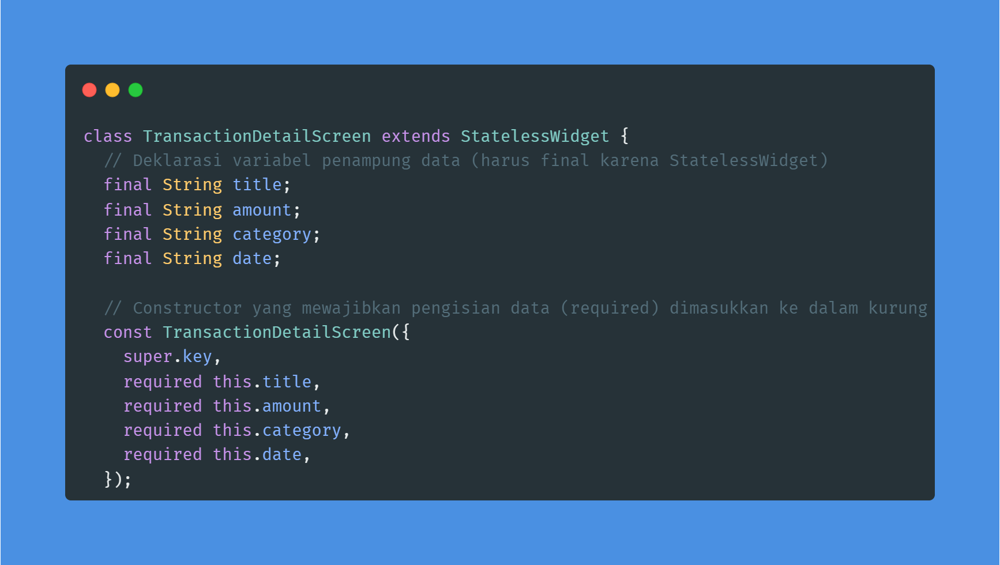
Mengimplementasikan fungsi _buildDetailRow. Daripada menulis ulang struktur kode yang sama berkali-kali untuk "Kategori", "Tanggal", dan "Status", pembuatan fungsi modular ini membuat kode lebih bersih (DRY - Don't Repeat Yourself). Penggunaan widget Row dengan MainAxisAlignment.spaceBetween memastikan konsistensi layout di mana label selalu rata kiri dan nilainya rata kanan.
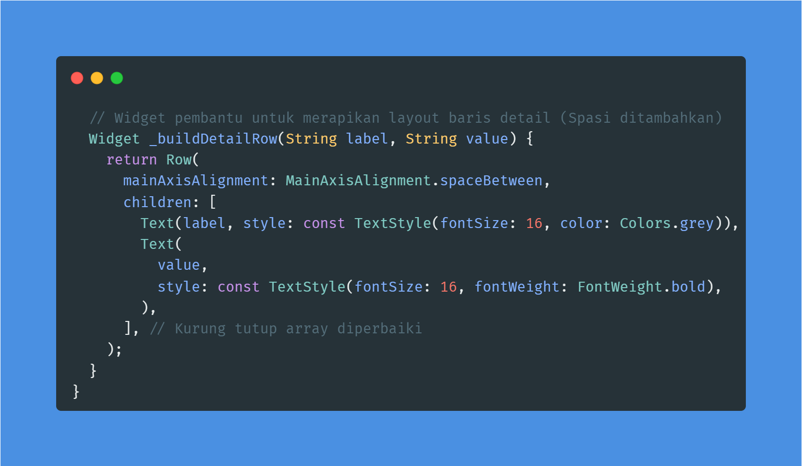
Bagian ini merupakan modifikasi aksi onTap pada widget ListTile di halaman Dashboard. Saat list transaksi diklik, fungsi Navigator.push dipanggil. Menggunakan konsep Stack (tumpukan kartu), metode ini mendorong layar TransactionDetailScreen ke tumpukan paling atas sehingga terlihat oleh pengguna. Pada saat yang bersamaan, data konkret (seperti judul 'Makan Siang' dan nominal '- Rp 50.000') disuntikkan secara eksplisit melalui constructor layar tujuan.
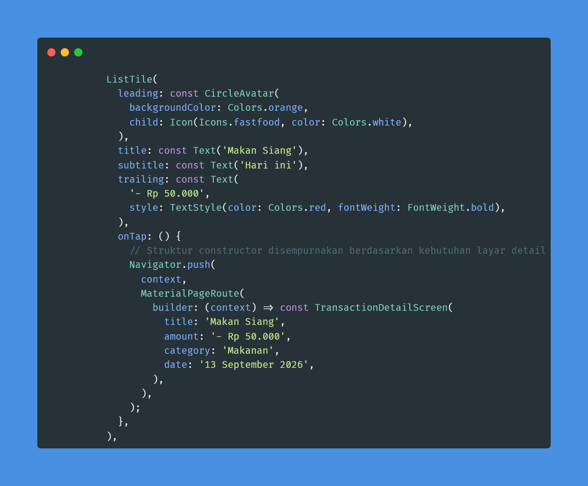
Kode ini dieksekusi pada aksi onPressed milik tombol "Simpan" di halaman AddTransactionScreen. Setelah form dipastikan valid, sistem akan menampilkan umpan balik visual berupa SnackBar ("Transaksi Berhasil Disimpan!"). Segera setelahnya, Navigator.pop(context) dieksekusi. Logika di baliknya adalah membuang halaman penambahan transaksi dari atas tumpukan (stack), sehingga aplikasi secara otomatis mundur kembali ke halaman Dashboard tanpa perlu pengguna menekan tombol back secara manual.
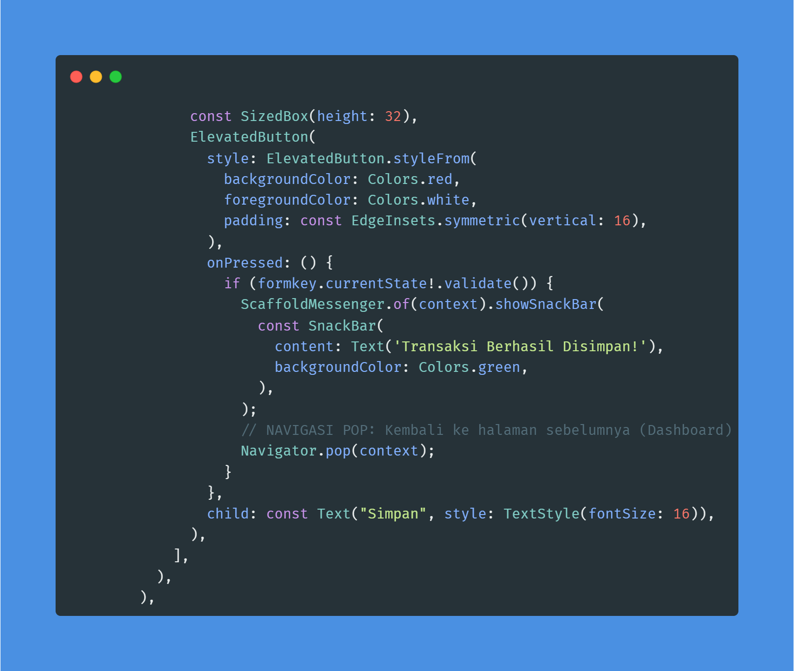
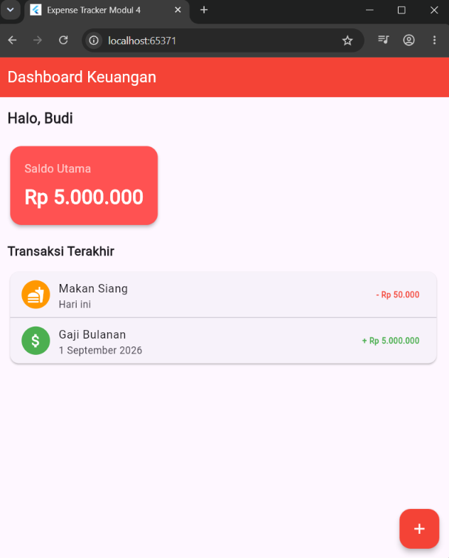
Tampilan Dashboard.
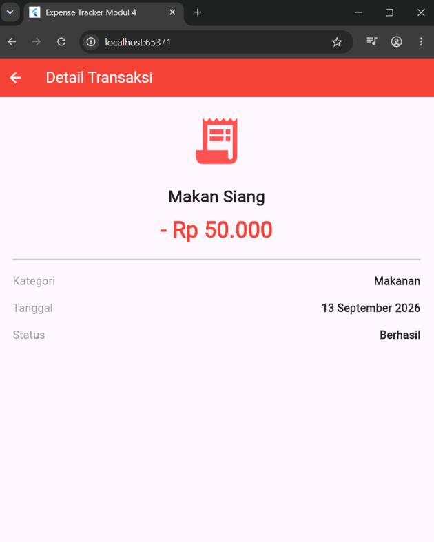
Tampilan Detail Transaksi.
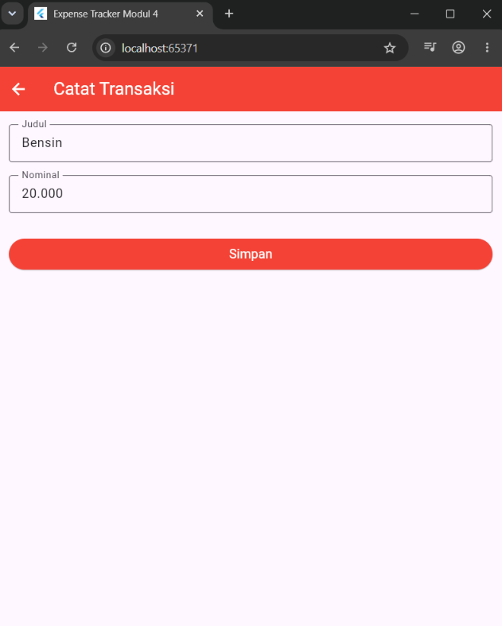
Tampilan Tambah Transaksi.
Penambahan variabel _dateController menggunakan TextEditingController. Variabel ini bertindak sebagai jembatan untuk membaca atau menyuntikkan string teks ke dalam field input.
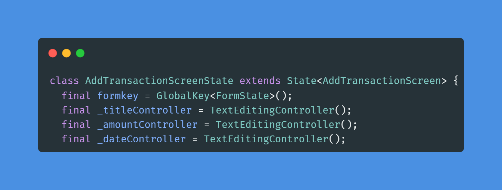
Atribut onTap digunakan untuk memicu showDatePicker, yang memanggil dialog kalender native bawaan sistem. Proses asynchronous terjadi di sini (await). Jika pengguna telah memilih tanggal (pickedDate != null), data tersebut diekstrak. Fungsi padLeft(2, '0') merupakan langkah mitigasi untuk memastikan bulan atau hari yang bernilai 1-9 tetap direpresentasikan dengan dua digit (misal: 01, 09), sehingga format akhirnya terstandarisasi menjadi DD/MM/YYYY dan dimasukkan ke UI melalui setState.
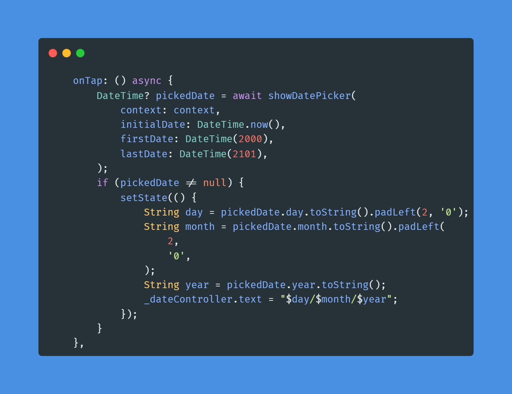
Penggunaan parameter validator memastikan integritas data. Jika fungsi mengevaluasi value == null atau value.isEmpty, maka form akan menolak proses penyimpanan transaksi dan melempar galat visual "Tidak boleh kosong" kepada pengguna.
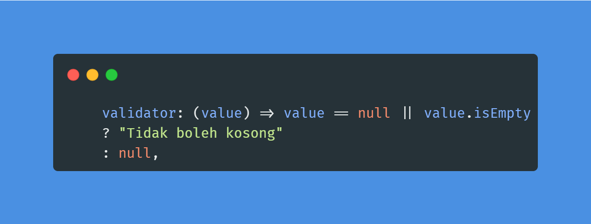
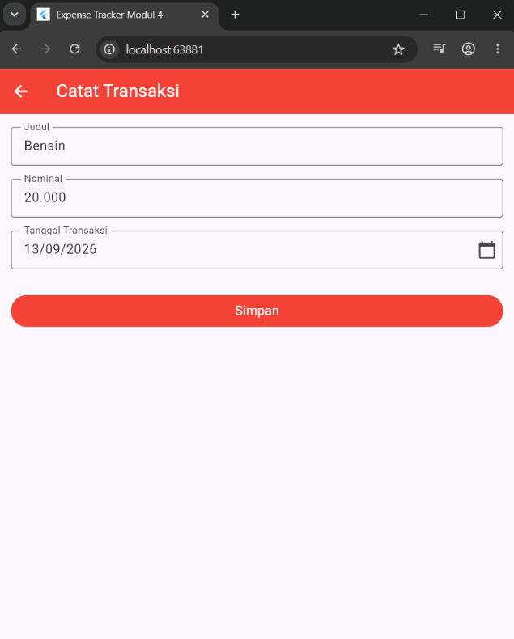